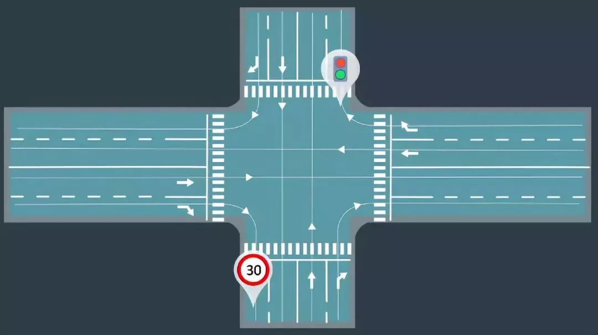
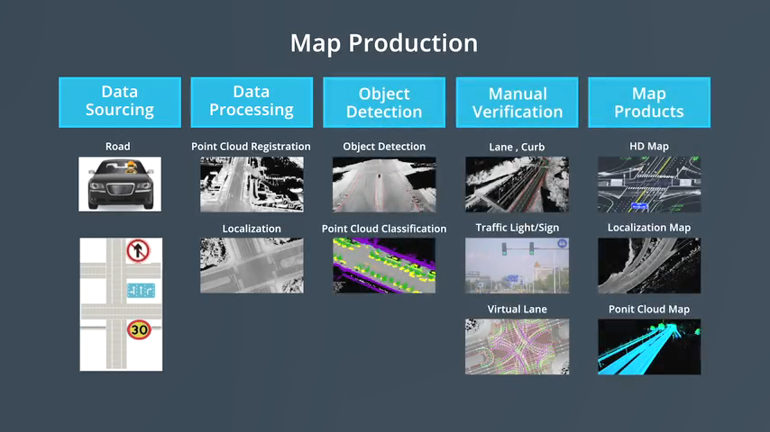

高精地图
本部分介绍高精地图。高精地图是包含了大量驾驶辅助信息的、高精确度机器用地图。
快速回忆
- what - 高精地图上包含哪些信息？主要特征是什么？
- why - 高精地图支撑着哪些自动驾驶任务？如何做到的？
- how - 高精地图是如何构建的？
信息
高精地图包含道路网的精确三维表征（如道路定义、交叉路口、交通信号等元素），还包含很多语义信息（如车道规则等）。

最重要特征之一是精度，达到厘米级别。
此外，Apollo高精地图采用OpenDRIVE格式。
作用
高精地图对定位、感知和规划模块提供了基础性作用，具体包括：提供精准定位、放/缩感知范围、规划行车路线。
定位
车辆从传感器收集数据，经过数据预处理、坐标转换和数据融合后，与高精地图上的进行匹配，以确定车辆的具体位置。
感知
一方面（放），高精地图提前将感知器尚未获取的路面信息（如下一个路口的交通灯）提前提供给软件栈，以帮助车辆进行下一步决策；
另一方面（缩），高精地图提供给传感器在哪些区域可寻找想要的信息（如停车点），缩小了感兴趣区域大小(ROI)。
规划
高精地图帮助规划模块寻找行车路线、寻找行车空间（寻找道路中心线、在标志牌或障碍处提前减速等）、预测其他车辆位置。
构建
高精地图的构建包含五个步骤：数据采集、数据处理、对象检测、手动验证和地图发布。

数据采集
测试车辆收集用于制作地图的源数据，然后融合多种传感器的数据以生成高精地图；
数据处理
收集到的数据需要进行整理、分类和清晰，以获得没有任何语义信息或注释的初始地图模板；
对象检测
使用机器学习方法对初始地图上的物体进行识别；
手动验证
对识别后的标注进行手动验证；
地图发布